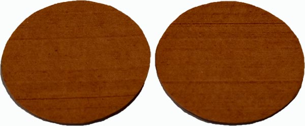
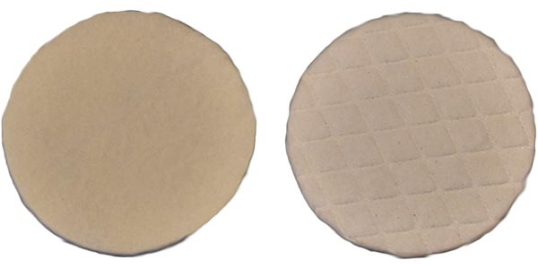
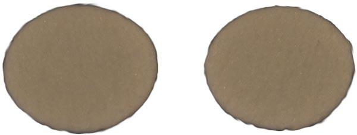
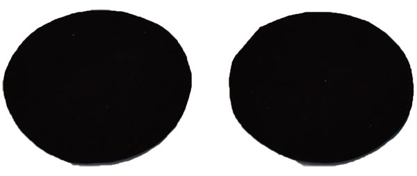

NONWOVEN PAD DATA
KC 900/655-SP AND KC 900/955-SP
- PHYSICAL PROPERTIES
Weight 540 g/m2 (15.9 oz/y2) Nominal ~ Specific Gravity: 0.45 - 0.55 ~ Hardness: Shore A 85 - 95 Compressibility: 5 to 8%
- DESCRIPTION
Excellent quality hard polishing pad combining a proprietary Phenolic and Acrylic hard resin fiber hydro entangled nonwoven fabric.
- APPLICATION
Use with deionized water, cerium, or other abrasive slurries including paste for polishing Sapphire, Silicon Wafers, ceramics (ULE/ Zerodur) and glass.
- DIMENSIONS
Available in roll goods-maximum width 72 inches with a nominal roll length of 50 Linear Meters (55 Linear Yards) on a 6-inch ID core. Also available in sheet and disc from 4-inch to 54-inch diameter. Note: special packaging is required > 36-inch diameter discs. Pressure Sensitive Adhesive (PSA) available upon request.
- THICKNESS
KC 900/655 SP ~ 1.15 mm (0.0453"), KC 900/955 SP ~ 1.00 mm (0.3937")

KCS-4991 REGULAR AND EMBOSSED
- PHYSICAL PROPERTIES
Specific Gravity: 0.3 - 0.4 ~ Hardness: Shore A 70 - 80 ~ Compression: 5 to 15% ~ Glass Transition Temperature: < -15°C
- DESCRIPTION
A durable plain or embossed nonwoven polishing pad with fast removal but not limited to hard materials. The pad is composed of (1) a top layer of a nonwoven texture fabric imbedded with a thermoset urethane and (2) adding a supporting layer of a proprietary adhesive. This combination of materials eliminates the need for a sub-pad thereby allowing optimum performance using most common types of slurries ranging from low acidic to high alkaline solutions.
- APPLICATION
Excellent for bulk removal and polishing assorted substrates including ceramics, glass, and silicon wafers. The embossed version has been approved for polishing ZnS and ZnSe. The addition of the diamond shaped embossing pattern improves flatness and reduces edge roll-off.
- DIMENSIONS
Currently available in disc sizes from 4 to 30 inches. Sizes outside of the stated range may be available upon request. Pressure Sensitive Adhesive (PSA) is available upon request.
- THICKNESS
1.524 mm (0.060") Nominal.

KCS-0014NC
- PHYSICAL PROPERTIES
Weight: 600g/m2 ~ Specific Gravity: 0.25 - 0.40 ~ Hardness: Shore A -35 to 50 ~ Compressibility: 5 to 25%
- DESCRIPTION
Proprietary fibers bondeed to a high loft and highly porous polishing cloth using needle point technology. The material can be buffed on one side.
- APPLICATION
Combined with a polishing slurry or paste to polish glass (including panels), ceramics, and metal.
- DIMENSIONS
Rolls and sheets up to 63 inches wide and disc sizes from 4 to 54-inch diameter. Pressure Sensitive Adhesive (PSA) or Plain Backing is available upon request.
- EMBOSSING
Yes, a competitor's pattern can be matched or the customer's own specification.
- THICKNESS
2.6 mm (0.102"), 5 mm (0.197"), and 6 mm (0.236").

KC-B70
- PHYSICAL PROPERTIES
Area Weight: 580 - 680 g/m2 ~ Hardness: Durometer - Shore D 35 to 50 ~ Compression: 15 - 20% ~ Thickness: 1.8 mm (0.071") Nominal.
- DESCRIPTION
KC-B70 is a black, buffed fibrous polishing pad consisting of a proprietary hydro-entangled nonwoven material filled with a soft resin. The material can be laminated with PSA (Pressure Sensitive Adhesive), a hot melt adhesive, and die-cut to a final pad configuration. Both sides of the KC-B70 are uniform in structure. Therefore, no buffing is required.
- APPLICATION
Suggested, but not limited to, fine and final polishing of Ophthalmic Lenses, MEMS devices, Precistion Optics, and various metal alloy surfaces where a highly planarization surface is required. KC-B70 can be used with deionized water, abrasive slurries, or paste.
- DIMENSIONS
KC-B70 is available in rolls 54" (1,371 mm) wide and 50 linear yards in length. Discs and other sizes are available.
